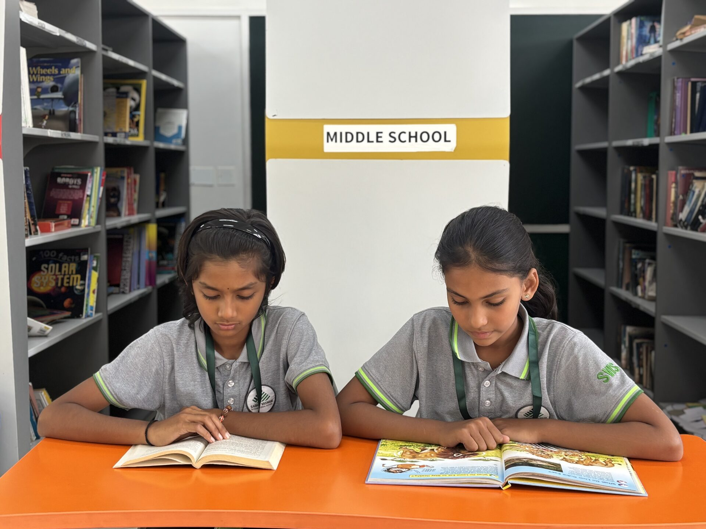

Home — FAQ
Answers, before you even ask.
Admissions
For which grades are admissions open for AY 2026–27?
Admissions are open from Montessori to Grade 8 for the 2026–27 academic year. Students may also be admitted through the year based on vacancies.
How do I apply for admission to SVIS?
Apply via the online form on the website or get a form from the school office. Admission depends on seat availability, age criteria and the assessment/interaction results.
What are the age criteria for admission?
As on 31st May of the academic year: Nursery 3 years, LKG (KG I) 4 years, UKG (KG II) 5 years, Class 1 6 years. Older grades follow CBSE-recommended age norms. The kindergarten programme is a three-year curriculum — Nursery, LKG (K-I) and UKG (K-II).
Does the school conduct an entrance test?
KG and Grade I admissions involve a verbal on-campus interaction covering perceptual, communication, motor and analytical skills. Grades II and above have a short written assessment on grade-appropriate content — English and Math for Grade II; English, Math, Science and the chosen second language for Grades III–IX — followed by an interaction with the Head of School.
What is the admission process?
Register online, complete verification, take an on-campus assessment, meet the academic team, then receive the final status. If selected, an admission confirmation email is sent within 5 working days; parents confirm within 7 days to secure the seat.
What documents are required for admission?
Birth certificate, Aadhaar cards (child and both parents), passport-size photos of the child and parents, and from Grade 2 onwards the original Transfer Certificate and previous year's report card — plus any address proof, medical reports or legal custody/guardianship documents that apply.
Are mid-year admissions possible?
Yes, handled case-by-case and subject to seat availability.
When does the admission process begin?
Each November for the following academic year.
Academics & Curriculum
Which board is the school affiliated to?
The Central Board of Secondary Education (CBSE), New Delhi, for Grades I–X.
What curriculum does SVIS follow?
The CBSE curriculum, integrated with art-based, inquiry-based and experiential learning. Assessments are continuous and comprehensive — formative and summative tests each term, aligned to CBSE norms.
What languages are offered?
English is the medium of instruction. Hindi and Kannada are offered as second/third languages per CBSE; Kannada is mandatory as per NEP.
Which subjects are taught at the primary level?
English, Math, Science, Social Studies, Languages, Art and Computer Studies, alongside robotics, digital literacy, arts and sports.
What are the school timings?
Monday–Friday: Kindergarten & Nursery 8:00 AM–12:00 Noon; Grade I and above 8:00 AM–3:00 PM. School office: 8:00 AM–3:30 PM, plus the 2nd and 4th Saturdays, 8:00 AM–12:00 Noon.
What is the teacher–student ratio and class size?
15:1 in Pre-Primary; 28:1 in Primary and Secondary, with roughly 28–30 students per class and a focus on individual attention.
What co-curricular activities are offered?
Music, dance, art, drama, yoga, public speaking, robotics, clubs, inter-house and inter-school events, PE, sports and special assemblies. Field trips and educational tours are organised regularly.
How does SVIS integrate values into education?
Daily prayers, meditation, kindness projects and service activities — part of our value-based curriculum rooted in Sadhu Vaswani's teachings.
Facilities & Safety
What facilities does the campus offer?
Smart classrooms, science, computer and math labs, a naturally lit library, music and art rooms, age-appropriate playgrounds, sports fields, an amphitheatre seating over 650 with digital sound and lighting, and an upcoming indoor arena — all on an IGBC Platinum green campus.
What sports facilities are available?
Athletics, basketball, football, volleyball, cricket, skating, yoga and indoor games with trained coaches — plus automatic enrolment at the Padukone–Dravid Centre for Sports Excellence.
Is school transport available?
Yes — GPS-enabled buses across major routes, integrated with the Roorides App, with trained drivers and a female attendant on every bus.
What safety measures are followed on campus?
CCTV surveillance, lady guards, controlled entry/exit, a compounded campus, restricted zones, first aid and strict child protection norms. Science labs follow safety standards under a designated lab-in-charge.
Does the school provide textbooks, uniforms and meals?
Yes — all textbooks and notebooks are provided by the school, and uniforms are purchased directly through the school. An optional meal plan provides breakfast at 8:30 AM and lunch at 12:00 PM at extra cost, with a weekly "Fun Fridays" menu highlight; students may also bring their own food.
Communication & Fees
How does the school communicate with parents?
Via the My Classboard (MCB) parent portal app, emails, circulars, the school diary and parent-teacher meetings. Parents can meet teachers or leadership during PTMs or by prior appointment through the office.
How are the fees to be paid?
Online or offline through the school's MCB parent portal. Clear and transparent fee details for every grade are shared by the admission office on request.
How can I contact the school?
Call or WhatsApp +91 99454 48830, email info@svisbangalore.com or enquiries@svisbangalore.com, or visit No 348/1 & 348/2, Bettahalsur Village, Jala Hobli, Yelahanka, Bangalore – 562157.
Still curious?Come see us.
Nothing answers a question like a visit. Call +91 99454 48830 or write to enquiries@svisbangalore.com to schedule a campus tour.
Explore Admissions